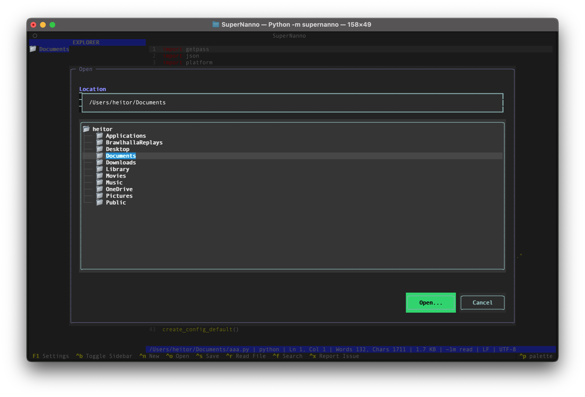
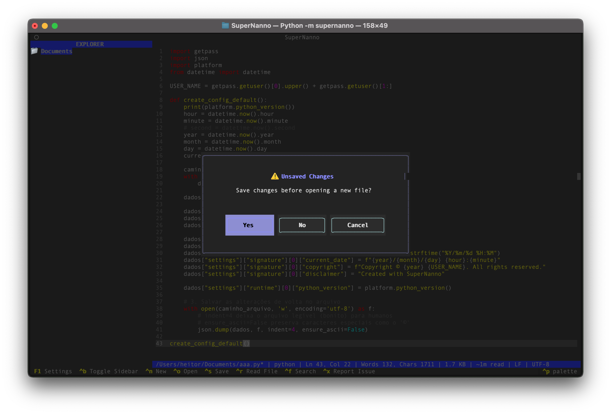

Elegant modal dialogs, full CLI control, and a more polished experience.
SuperNanno 0.1.23 introduces NannoKit.Dialogs — beautiful, native-feeling file and message dialogs — plus complete line numbers support via CLI and major UX refinements.
--linenumbers and --no-linenumbers with correct priority.A modern, lightweight set of file and message dialogs built for Textual applications.
|
 Directory / File Picker |
 MessageBox • YES/NO/CANCEL |
Designed to integrate seamlessly into SuperNanno and work standalone in any Textual app.
Learn more about NannoKit.Dialogs →--linenumbers. CLI now takes precedence over config.$ pipx upgrade supernanno$ bash dev.sh
# Choose option 1 or 2Note: Version 0.1.23 maintains full backward compatibility. The new dependency nannokit-dialogs will be installed automatically.